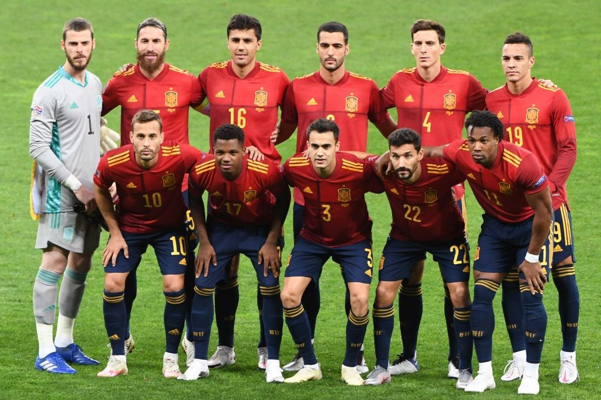

COPAS QUE JÁ PARTICIPOU:
A seleção espanhola já teve 15 edições de Copa do Mundo de futebol, essa será a sua 16° participação.

PREMIAÇÕES QUE JÁ ALCANÇOU
Venceu a Copa do Mundo de 2010.
NOME DO TÉCNICO:
Luis Enrique
PRINCIPAIS JOGADORES
Pino
Rodrigo
Tomás
Tabela de jogos
| Data/Hora | Estádio | Adversário |
|---|---|---|
| 23 nov 2022 / 19h00 | Estádio Al Thumama | CONCACAF–OFC |
| 27 nov 2022 / 22h00 | Estádio Al Bayt | Alemanha |
| 1º dez 2022 / 22h00 | Estádio Internacional Khalifa | Japão |